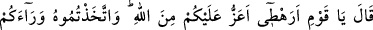
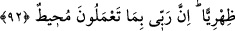

Oyun oynar çocuklar, oyuna dalarlar da,
Çanak çömlek kırıntıları onlara, altın ve mal görünür.
Allah’ın ârifleri kimyacı olmuşlardır.
Onların nazarında madenlerin bile kıymeti kalmamıştır.
Bağlar, köşkler, ırmaklar
Aşk yüzünden gözüne külhan görünüyor.
92. (Şuayb) dedi ki: “Ey kavmim, size göre benim kabilem Allah’tan daha mı
güçlü ve değerli ki O’nu (Allah’ın emirlerini) arkanıza atıp unuttunuz? Şüphesiz
Rabb’im yapmakta olduklarınızı çepeçevre kuşatıcıdır.”
Kavmine cevap olarak Şuayb: “dedi ki: “Ey Kavmim, size göre benim kabilem”
aşîretim, kavmim “Allah’tan daha mı güçlü ve değerli” aziz ve dost “ki O’nu” yâni
Allah Teâlâ’yı unutulmuş, hatırdan çıkarılmış bir kimse gibi “arkanıza atıp
unuttunuz?” Buradaki istifham yaptıklarını kötü görüp kınadığını ifade etmektedir.
Aslında “Benden daha mı değerli ki” demesi beklenirdi. Ancak Allah’ın peygamberi
olduğu için kendisini basit görmelerinin Allah’ı basit görmek demek olduğunu
göstermek için “Allah’tan” demiştir.
Şuayb (a.s.) sâdece onların kendi kabîlesini Allah Teâlâ’dan üstün görmelerini red ve
inkar etmiştir. Halbuki onlar onun kabîlesinin Allah Teâlâ’dan üstün olduklarını değil
sadece onun kabîlesinin mutlak olarak üstün olduğunu belirtmişlerdir. Değerli oluş
hususunda temelde müşterek olmalarına rağmen Şuayb, önce Allah’ı tercih etmedikleri
için, ikinci olarak da Allah’tan değersiz olduğunu söyledikleri için bir kez daha kınamak
maksadıyla, kabilesinin Allah’tan daha değerli olduğu düşüncesini kötü görmüş
olmaktadır.
Yâni, size göre benim kabilem Allah’tan daha mı değerli? Böyle bir şey doğru
olamaz. Oysa siz, bırakın O’nu daha değerli kabul etmeyi, O’na hiç değer
vermiyorsunuz!
Allah’ı, ne dediği dikkate alınmayan, unutulmuş bir varlık olarak arkaya atılan bir şey
olarak gördünüz. Yani O’na ortak koşmak ve elçisini basit görmek suretiyle O’nu böyle
bir duruma düşürdünüz. Bana Allah nazarındaki mevkiime göre değil de kabilem
nazarındaki durumuma göre değer veriyorsunuz. Yani bana merhamet ederek beni
korurken, Allah için değil, kabilemi göz önünde bulundurarak merhamet ediyorsunuz.
Bir peygamber olarak Allah’a yakın oluşumu göz ardı ediyorsunuz. Bu hareket tarzınızla
da bir nevi, kabilemin Allah’tan daha değerli olduğunu iddiâ etmiş oluyorsunuz. Çünkü